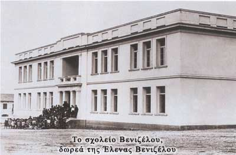

Οι Μικρασιάτες πρόσφυγες, γνωστοί για την φιλομάθειά τους, παρά την τραγωδία του ξεριζωμού
που έζησαν και την ανείπωτη ταλαιπωρία που υπέστησαν, απαίτησαν σχολεία για τα παιδιά τους
από την πρώτη στιγμή της εγκατάστασής τους. Στην Καισαριανή το πρώτο σχολείο λειτούργησε το
1924-1925 σε ένα κακής κατάστασης πλινθόχτιστο κτίριο και, επειδή αδυνατούσε να εξυπηρετήσει
όλους τους μαθητές της περιοχής, εξαναγκάζονταν πολλοί απ' αυτούς να φοιτούν σε σχολεία
γειτονικών συνοικιών. Το 1929 ο πρωθυπουργός
Ελευθέριος Βενιζέλος ιδρύει το
πρώτο σύγχρονο σχολείο στην Καισαριανή, δωρεά της γυναίκας του Έλενας, που θα φέρει και το
όνομά της "Σχολείο Βενιζέλου". Το 1937 με πρωτοβουλία της μεγάλης παιδαγωγού Ρόζας Ιμβριώτη
θα ιδρυθεί στην Καισαριανή το πρώτο σχολείο στη Ελλάδα για παιδιά με ειδικές ανάγκες.
|
|
 |